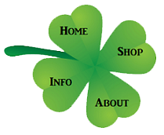

This would be a block of script highlighting the latest and greatest, emphasizing sales and suggestions for music that you should look into, then a link to the actual pages of NEW records.
This would be a block of script highlighting the most recent procurements, emphasizing sales and suggestions for music that you should look into, then a link to the actual pages of USED records.
This would be a block of script highlighting the different genres and eras, emphasizing sales and suggestions for music that you should look into, then a link to the actual pages of VINTAGE records.